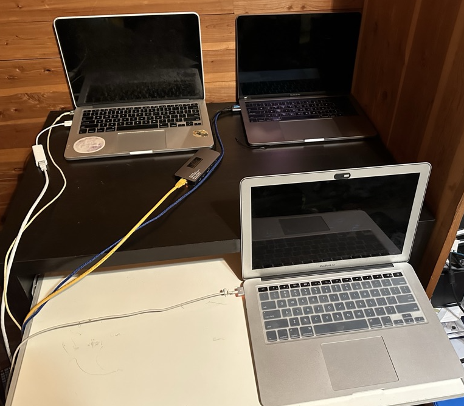

This is my Website, which I've implemented from scratch. My idea behind doing it this way, as opposed to using any existing platform, was to hopefully give myself a much deeper understanding of how the Web works, and to get practice with a wide range of skills I was lacking, working on things including networking, security, frontend, and backend.
The first layer of this is the hardware I use, which is an old(er) computer I had, which I completely wiped and installed the LAMP (Linux, Apache, MySql, PHP) stack onto.
From there, I had to properly configure my home network to properly deliver content. The first step of this was creating VLANs to segment my network. This is a security measure, to make sure my servers are safe from other devices on the network, and more importantly, to protect these other devices from any potential issue with my servers. The last configuration I needed to do was install multiple dynamic update clients, as my home network recieves a dynamic IP address from my ISP, this ensures amdreier.com always points to the correct address.
Next, I had to set up my SSL certificates and automated renewal. I did this using CertBot, which will make sure my site always has a valid SSL certificate for HTTPS. After this, I implemented my next security measure, which was making use of a CDN (content distribution network), Cloudflare. This not only speeds up incoming connections by making use of Cloudflare's caching, but also ensures all connections to my Website are proxies through Cloudflare, meaning no direct connection is ever made between the widder internet and my servers.
Last, was the setup of my actual server and the code on it. This was the most straightforward part, as once all of the other technologies were working, this resembled the development of a normal Website with a mix of HTML, CSS, JS, and PHP.
In the end, this is a picture of my actual setup at home.